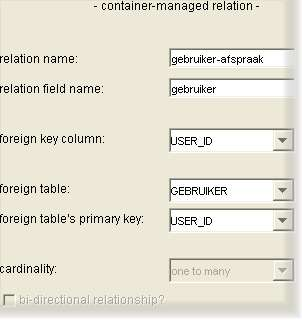

Relation configuration screen

This screen contains configuration options for a relation:
- relation name: the name used to identify this relation.
- relation field name: a relation is represented in the entity as a field, with correspponding get- and set-methods.
This is the name for the relation field, which must be a valid Java field name.
- foreign key column: the foreign-key column in this entity's database table that this relation maps to.
- foreign table: the database table that the foreign key points to.
- foreign table's primary key: the primary key column in the foreign-key table (NOTE: relations to entities with
compound primary keys are not yet supported).
- cardinality: the relation may be one-to-one, one-to-many or many-to-many depending on the mapping between this
entity and the related entity (NOTE: presently only one-to-many relations are supported)..
- bi-directional relationship?: checked if the relation is bi-directional, i.e. the relation may be traversed
in both directions (NOTE: presently only unidirectional relations are supported).